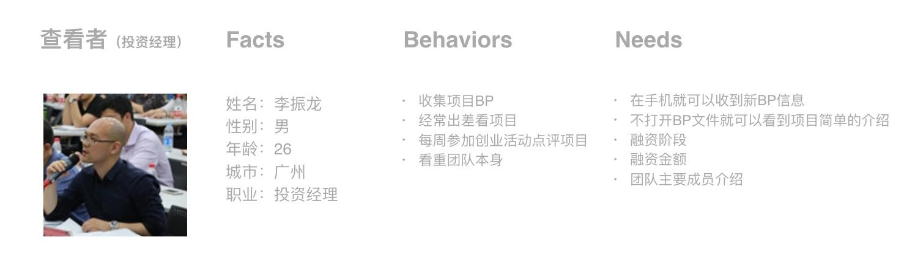

闪电投BP
创大公司在多地有线下孵化器，也有基金以及投资部门。“闪电投BP”是一个BP投递系统，通过公众号导流，意在收集创业项目BP，分类打标签，方便投资经理筛选项目，并且这也是为了后期做成创业投资平台做准备。这个项目我参与的很完整，从前期用户调研到上线后的运营都有参与。
用户调研
我跟产品经理一起对孵化器内的创业者和投资部的投资经理进行访谈，来帮助我们确定和梳理投递BP的内容和结构，并让整个过程更友好。

整体流程
问题
在调研的过程中发现，当项目有进展或者方向有所调整时，创业者都会更新商业计划书。所以在BP的管理中需要有修改的小功能。
方案一。就是很常规做法，在查看已投递的BP详情页增加修改BP的按钮，让创业者在有必要时岁BP进行修改更新。
现在只是满足了最基本的需求，我们的目标是让产品有更情感化的体验
方案二。通过与创业者沟通，也从投资人那里了解到，很多创业公司都有一个习惯，把公司发展的重要节点记录下来，日后可以回顾发展史。而对公司来说，项目本身是才是核心，创业者到我们平台投递项目甚至后期更新。我们有这个数据沉淀，可以帮他们记录下来，并且以时间轴的方式展示出来，随时都可以来查看项目的发展进程，增加用户的好感度，从而让体验得到提升。而且后期有一定积累后也可以提供一个小功能：BP修改时间轴记录生成一张项目发展的图片，供创业者回顾分享。
举例交互细节距离
上传BP文件的操作及结果反馈。
实现出来的效果
“闪电投BP”上线后，我也有参与到运营中，只要有项目BP投进来，都会10分钟内电话回访，核实BP信息，并且搜集产品体验问题。数据上，平均每天有2-3个项目BP投进来，数量不多质量也一般，这个的主要原因是没有形成品牌优势。不过在这个项目我是有很大提升，用户调研、情感化设计以及细节交互的处理方法都有了一些积累。